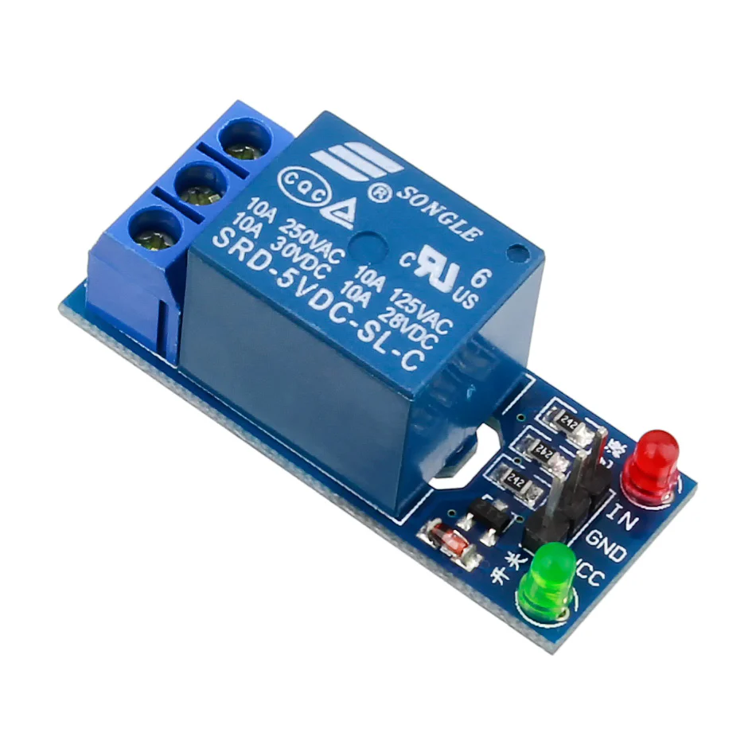

Relés
-
Um relé é um interruptor eletromecânico projetado por Michael Faraday na década de 1830, com inúmeras aplicações possíveis em comutação de contactos elétricos, servindo para ligar ou desligar dispositivos. A movimentação física deste interruptor ocorre quando a corrente elétrica percorre as espiras da bobina do relé, criando um campo magnético que, por sua vez, atrai a alavanca responsável pela mudança do estado dos contactos.
- Relés Eletromecânicos
- Relé de Potência (Power Relay): Utilizado para controlar circuitos de alta corrente em aplicações industriais e automotivas.
- Relé de Sinal (Signal Relay): Projetado para correntes mais baixas, usado em eletrónica de consumo e telecomunicações.
- Relés de Estado Sólido
- Relé de Estado Sólido (Solid State Relay, SSR): Utiliza componentes eletrónicos para comutação, oferecendo maior durabilidade e tempo de resposta mais rápido em comparação aos relés eletromecânicos.
- Relés de Tempo
- Relé Temporizador (Time Delay Relay): Proporciona um atraso temporizado antes de acionar ou desligar, usado em automação industrial.
- Relés de Sobrecorrente
- Relé de Sobrecorrente (Overcurrent Relay): Desliga o circuito quando a corrente excede um limite predefinido, utilizado em sistemas de proteção elétrica.
- Relés de Subcorrente
- Relé de Subcorrente (Undercurrent Relay): Atua quando a corrente cai abaixo de um valor especificado, utilizado em proteção de motores.
- Relés de Sobretensão
- Relé de Sobretensão (Overvoltage Relay): Desliga o circuito quando a tensão excede um limite seguro, utilizado em sistemas de proteção de energia.
- Relés de Subtensão
- Relé de Subtensão (Undervoltage Relay): Atua quando a tensão cai abaixo de um nível seguro, protegendo equipamentos contra baixa tensão.
- Relés de Falta à Terra
- Relé de Falta à Terra (Earth Fault Relay): Deteta falhas de isolamento e desliga o circuito para evitar choques elétricos.
- Relés de Proteção
- Relé de Proteção Diferencial (Differential Protection Relay): Deteta diferenças de corrente entre dois pontos, utilizado em transformadores e linhas de transmissão.
- Relé de Proteção de Sobrecarga Térmica (Thermal Overload Protection Relay): Protege motores contra sobrecarga térmica.
- Relés de Monitorização de Fase
- Relé de Monitorização de Fase (Phase Monitoring Relay): Deteta falhas ou desequilíbrios nas fases de alimentação elétrica, protegendo equipamentos trifásicos.
- Relés de Contato Auxiliar
- Relé de Contato Auxiliar (Auxiliary Contact Relay): Utilizado para amplificar sinais de controle ou isolar diferentes circuitos de controle.
- Relés de Segurança
- Relé de Segurança (Safety Relay): Projetado para aplicações de segurança, garantindo que os sistemas entrem em um estado seguro em caso de falha.
- Relés de Estado Sólido de Alta Tensão
- Relé de Estado Sólido de Alta Tensão (High Voltage Solid State Relay): Usado em aplicações de alta tensão, fornecendo comutação rápida e segura sem partes móveis.
- Relés de Interface
- Relé de Interface (Interface Relay): Facilita a conexão entre diferentes tipos de sistemas de controle, como PLCs e dispositivos de campo.
- Relés de Estado Sólido de Corrente Alternada
- Relé de Estado Sólido AC (AC Solid State Relay): Projetado para controlar cargas de corrente alternada com alta precisão e confiabilidade.
- Relés de Estado Sólido de Corrente Contínua
- Relé de Estado Sólido DC (DC Solid State Relay): Ideal para aplicações que exigem controle preciso de cargas de corrente contínua.
- Relés Temporizadores Programáveis
- Relé Temporizador Programável (Programmable Timer Relay): Permite a configuração de temporizações complexas para automação e controle de processos industriais.
- Relés Bifásicos
- Relé Bifásico (Bipolar Relay): Utilizado para controle de circuitos bipolares, comutando duas correntes simultaneamente.
- Relés de Contato de Estado Sólido
- Relé de Contato de Estado Sólido (Solid State Contact Relay): Combina a funcionalidade de relés de estado sólido com contatos físicos, oferecendo flexibilidade e durabilidade.
- Relés de Alta Frequência
- Relé de Alta Frequência (High Frequency Relay): Projetado para operar em frequências de rádio e micro-ondas, usado em telecomunicações e equipamentos de teste.